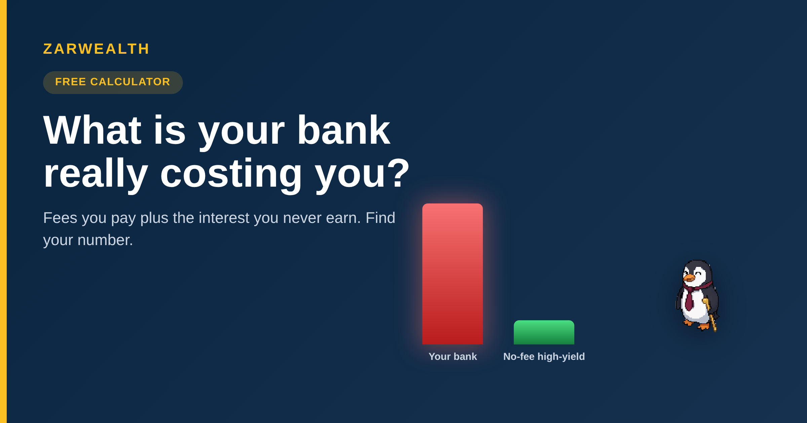

Best Checking & Cash Accounts 2026: What Is Your Bank Really Costing You?
Use our free calculator to see what your bank really costs you in fees and lost interest. Compare the best no-fee, high-yield accounts for 2026.
Z Zar · 06 Jun 2026 — 7 min read

Best Checking & Cash Accounts 2026
Part of our Budget & Debt Guide — the everyday-banking cluster.
Here's a number most people never calculate: what their bank costs them every year. Not the headline fees on the statement — the real number, which includes the interest they quietly give up by leaving cash in an account paying almost nothing. For a lot of people that number lands somewhere between $300 and $600 a year, every year, for as long as they stay put.
Quick gut check before we go further: do you know your checking account's APY off the top of your head? Most people don't — and that blank is exactly where the money leaks. Hold that thought.
This guide does two things. First, it gives you a calculator to find your own number in about thirty seconds. Then it walks through the no-fee, high-yield accounts that would hand most of that money back — with current 2026 rates, named, so you can compare.
No-Fee, High-Yield Accounts at a Glance
| Account | APY (mid-2026) | Monthly fee | Best for |
|---|---|---|---|
| SoFi Checking & Savings | up to 3.80% | $0 | One account for spending + saving |
| Ally Bank | 3.10% | $0 | Simple, well-built mobile banking |
| Capital One 360 | 3.00% | $0 | Branch access + online rates |
| Charles Schwab Bank | ~0.4% + ATM refunds | $0 | Travelers — global ATM fee rebates |
Rates as of June 2026 — confirm current terms before opening.
The number nobody calculates
Your bank charges you in two ways, and only one of them shows up as a "fee." The visible one is the monthly maintenance charge — the national average is now around $13.51, though plenty of banks sit between $4 and $25. Add the occasional overdraft, which averages $32.75 per slip in 2026, and a couple of out-of-network ATM withdrawals at roughly $4.70 each, and the visible cost alone can clear $200 a year.
The invisible cost is bigger. If you keep $8,000 in an account paying 0.01% while a no-fee account pays 3.5%, you're giving up about $280 a year in interest you could have earned for doing nothing. That's not a fee on any statement — it's just money that never shows up. Add the two together and you get the real cost of staying put.
The good news, and it's worth saying plainly: nearly a third of checking accounts charge no monthly fee at all, and the best ones also pay real interest. The cost is almost entirely avoidable. The hard part isn't finding a better account — it's calculating what your current one costs so the switch feels worth the twenty minutes.
Find your number
So let's calculate it. Move the sliders below to match your situation — your average balance, your monthly fee, how often you overdraft in a year, and your current APY (if you don't know it, it's almost certainly under 0.10%). The calculator adds the fees you pay to the interest you're missing and shows the real annual cost. The penguin will tell you how bad it is.
Tell us what happened.
You moved the sliders. What was your number? Bigger than you expected, or smaller? And if you've already switched to a no-fee account, did the math match what you actually saw?
Drop it in the comments below — public, takes ten seconds. Or hit reply to the email — private, tell us your story.
What actually makes an account worth switching to
Once you know your number, the choice gets simpler. A genuinely good everyday account in 2026 clears three bars, and you shouldn't settle for fewer than all three.
First, no monthly fee, no strings. Not "no fee if you keep $1,500 in it" or "no fee with direct deposit" — just no fee. The online banks below charge nothing regardless of balance, which means you never lose money to a minimum you forgot to maintain.
Second, real interest on the balance. This is the part traditional banks fail. Paying 0.01% on your checking balance while inflation runs higher means your money loses value sitting still. A 3%+ account at least keeps pace. On an $8,000 balance, the difference is roughly $280 a year — every year.
Third, fee-free cash access. Look for a large ATM network or, better, ATM-fee rebates. Schwab's account refunds out-of-network ATM fees worldwide, which is why it's a quiet favorite among people who travel.
If you want the broader system these accounts plug into, our guide on how to automate your finances completely shows where checking fits, and our breakdown of the best money market accounts for 2026 covers where to park cash you don't need this month. For the fee-avoidance side specifically, our no-fee checking comparison goes deeper on the account mechanics.
The named picks for 2026
Here's how the strongest options actually compare. Rates move, so treat these as a starting point and confirm before you open anything.
SoFi Checking & Savings is the most aggressive on yield — up to 3.80% APY with direct deposit, no monthly fee, no minimum. It bundles spending and saving into one app, which suits people who want a single place for everyday money.
Ally Bank pays around 3.10% with no fees and is, frankly, the one we'd hand to someone who just wants it to work — clean app, good support, no gimmicks. Capital One 360 sits near 3.00% and adds something the pure online banks don't: physical branches and cafés, for people who still want a counter to walk into. And Charles Schwab Bank earns its spot almost entirely on the ATM-fee rebates — pair it with a high-yield savings account and it's the traveler's default.
Our take: if you want the highest number, SoFi. If you want the lowest-friction switch, Ally. If you travel, Schwab. There's no single winner — there's the one that matches how you actually use cash.
One book if you want to go deeper
I Will Teach You to Be Rich by Ramit Sethi — the clearest playbook for setting up no-fee, high-yield accounts and automating the whole thing, which is exactly the system this guide plugs into.
🛠️ Want more free tools like the one above? Browse our full set at zarwealth.tech/tools — all free, no signup.
 | Want the full picture? This is part of our Budget & Debt Guide. And we'd love to know: what number did the calculator give you, and did it push you to switch? Reply to the email or drop it in the comments — real reader numbers shape our next guide. |
Get the free 11-page FI Checklist
A step-by-step roadmap to financial independence — and the right accounts are step one. Sent the moment you subscribe.
Send me the checklist →